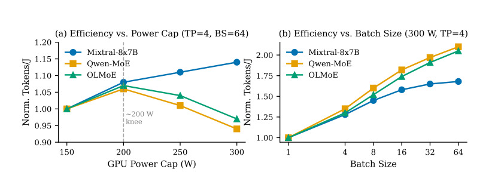
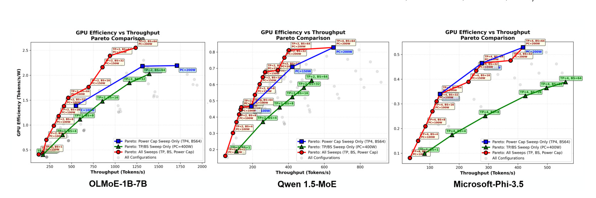
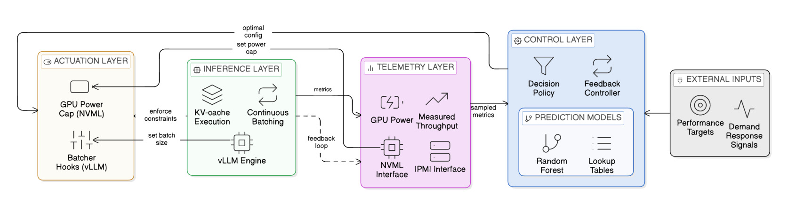
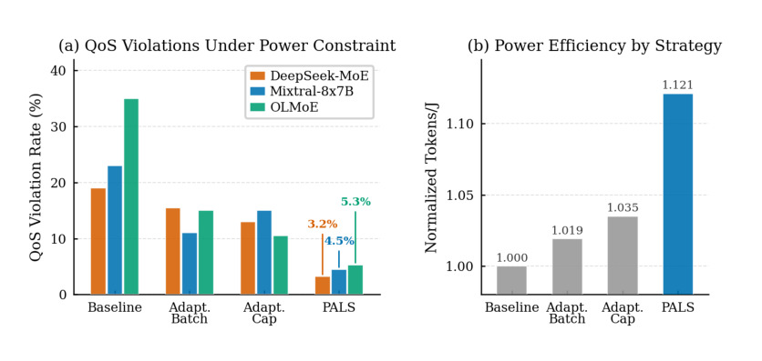

PALS：Power-Aware LLM Serving for Mixture-of-Experts Models
这里精读一篇 2026-05-20 提交到 arXiv 的论文《PALS: Power-Aware LLM Serving for Mixture-of-Experts Models》。中文可以叫《面向 MoE 大模型服务的功耗感知运行时》。
论文链接：arXiv:2605.21427
作者：Can Hankendi, Rana Shahout, Minlan Yu, Ayse K. Coskun
机构/团队：Boston University / Harvard University。
公开日期：2026-05-20，来源：arXiv cs.AI / cs.DC，arXiv ID：2605.21427。
代码/项目页：PDF 与 arXiv 页面本轮未核验到独立代码仓库。
0. 导读
PALS 关注的是大模型服务正在变得越来越现实的约束：GPU 功耗不是一个静态背景参数，而应该成为 serving runtime 的一等控制变量。过去 LLM 推理系统主要优化吞吐、延迟、批处理、并行策略和显存占用。即使讨论能耗，也常常是离线评估 tokens per joule，而不是在运行时把 power cap 和 batch size、并行参数一起调度。PALS 的主张是，数据中心里电力预算、动态电价、散热约束和 demand-response 场景会越来越常见，LLM serving 不能只假设 GPU 永远满功率。
这篇论文特别选择 dense 和 mixture-of-experts 模型一起评估，因为 MoE 服务的能耗行为更复杂。MoE 虽然每 token 只激活部分专家，但通信、专家并行、节点扩展和 batch size 都会改变 compute 与 communication 的比例。功耗上限提高不一定带来线性能效提升；在通信受限模型上，过高 power cap 可能只增加能耗，不提高吞吐。PALS 因此把 GPU power cap 和软件参数联合建模，目标是在满足吞吐/QoS 的同时最大化能效。
对推荐系统与大模型交叉方向，这篇论文的价值在于把“成本可控”推进到 runtime 层。推荐、广告、搜索和 RAG 的线上链路都越来越多地接入 LLM 或 MoE 模型，长期成本不仅是 GPU 数量，也包括功耗、峰谷电价、P99 延迟和服务级别约束。PALS 给出的思路是：把硬件功率控制和软件调度联合起来，而不是把模型服务当成固定耗电黑盒。
1. 背景与问题
LLM inference 已经成为数据中心重要负载。传统 serving 系统会调 batch size、tensor parallelism、expert parallelism、data parallelism，目标是提高吞吐或降低延迟。但 GPU power cap 往往被当作部署时设置，不参与每轮调度。这个假设在早期小规模部署里还可以接受，在大规模、多租户和电网交互场景下会失效。数据中心可能需要在某个时间段降低功耗，或者在不违反 QoS 的情况下追求更高 tokens/J。
MoE 模型进一步放大了这个问题。Dense 模型通常更 compute-bound，提高 power cap 对吞吐的影响较直观；MoE 模型涉及专家路由、专家并行和跨 GPU 通信，可能在较低功率下已经达到通信瓶颈。此时继续提高功耗不会等比例提高吞吐，能效反而下降。论文在动机实验里展示了不同模型 tokens/J 随 power cap 与 batch size 的曲线并不一致，这说明不能用一个固定经验值管理所有模型。
PALS 要解决的问题可以表述为：给定吞吐目标、功率预算和模型配置，serving runtime 如何选择 power cap 与 batch size 等运行时参数，使系统既满足 QoS，又尽量提高能效，并且能在外部 power budget 动态变化时稳定跟踪。这个问题比单纯做 offline profiling 更难，因为运行时负载会变化，系统配置空间又同时包含硬件旋钮和软件旋钮。
对推荐/广告系统而言，这个问题非常熟悉。排序链路常常会根据流量、时延预算和候选规模动态选择模型或特征；PALS 把类似思想带到 LLM serving：在不同功耗预算下选择不同 batch/power 组合，像调推荐链路的召回深度一样调模型服务能耗。
2. 核心方法
PALS 的系统由离线建模和在线控制两部分组成。离线阶段收集不同模型、batch size、parallelism 和 power cap 下的性能/功耗数据，建立轻量 power-performance model。这个模型不追求完全物理级精确，而是要在运行时快速预测哪些配置能满足吞吐目标、哪些配置在能效上更优。
在线阶段，PALS 运行在现有 LLM serving 框架中，论文实现基于 vLLM。它接收 telemetry，例如实际 throughput、GPU power、batch 行为和 QoS violation，然后控制器选择新的 operating point。动态旋钮包括 batch size 和 GPU power cap；静态或较重的旋钮如 TP、EP、DP 通常需要重载或部署时确定，因此主要用于离线分析与配置选择。PALS 的重点是 runtime-feasible knobs，也就是不改变模型权重、不改 API、不需要重训就能调整的参数。
方法上的关键是联合控制。单独调 batch size 只能改变软件并发，单独调 power cap 只能改变硬件功耗。如果模型处于 compute-bound，power cap 提升可能有效；如果处于 communication-bound，batch 或并行策略更重要。PALS 通过联合搜索避免把系统卡在某一类旋钮的局部最优。论文还讨论了 TP headroom，即固定 TP 部署与离线最佳 TP 之间的差距，用来说明部署时静态并行选择仍会影响运行时上限。
另一个重要场景是 grid-interactive AI。PALS 可以跟随外部 power target 动态调整，在低功率目标下通过联合调 batch 和 power cap 保持更高 throughput。这不只是节能指标，而是说明 LLM serving 可以作为可调负载参与电力系统协同。对于大规模企业部署，这类能力会越来越重要，因为算力成本和能源调度会同时进入平台优化目标。
3. 图表解读

图 1 展示 tokens/J 随 power cap 和 batch size 的变化。不同模型曲线明显不同：compute-bound 的 Mixtral 在提高功率时仍有收益，通信更重的 Qwen-MoE 和 OLMoE 则可能在某个功率点后能效下降。这个图支撑了 PALS 的核心动机：power cap 不能被当作固定背景参数，也不能用同一个阈值套所有模型。模型结构、并行方式和通信强度共同决定能效峰值。

图 3 展示 Pareto frontier 扩展。只扫软件参数、只扫硬件功率、联合扫硬件和软件，得到的效率/吞吐前沿不同；完整联合控制能覆盖更好的 operating points。它证明 PALS 的收益不是某个单一技巧，而是来自配置空间扩大和联合选择。对线上工程来说，这意味着只调 batch size 可能错过低功率高能效点，只调 power cap 又可能无法满足吞吐目标。

图 6 是 PALS runtime 设计。Telemetry 从推理执行中汇总到控制器，控制器预测可行配置并下发硬件与软件决策。这个图的工程价值很高：它把 PALS 放在 serving loop 里，而不是离线 profiling 报告。真正部署时需要关注 telemetry 延迟、控制周期、配置切换成本和安全回退策略；如果控制器更新过快，可能导致 batch size 波动；更新过慢，又跟不上功率预算变化。

图 9 是多节点功率约束评估，比较不同策略下 QoS violation 和归一化能效。论文摘要中提到 PALS 在功率约束下将 QoS violation 降低 4 到 7 倍，这张图对应的就是这种运行时约束场景。它说明节能不是简单降频：如果只压 power cap 而不调 batch 或调度，吞吐目标会被破坏；PALS 通过联合控制在低功率下尽量保住服务质量。
4. 实验与结果
论文在多 GPU 系统上评估 dense 与 MoE 模型，包含不同 total/active parameters、专家数量和 top-k 激活设置。核心指标包括 normalized tokens/J、throughput、QoS violation、power budget tracking 等。摘要给出的结果是，PALS 在 dense 与 MoE 模型上最高提升 26.3% 能效，在功率约束下将 QoS violation 降低 4 到 7 倍，并能跟踪动态 power budget。
单节点实验说明联合控制比 baseline、只调 batch 或只调 cap 更接近 oracle。多节点实验说明节点扩展并不总是提升能效，尤其通信占比高的 MoE 模型在节点增加后 tokens/J 可能明显下降。这个结果对 MoE 部署非常关键：为了吞吐盲目加节点，可能换来更差能效和更复杂的尾延迟。
论文也评估 demand-response 场景。外部功率目标随时间变化，PALS 通过调整 batch size 与 power cap 维持更高吞吐，低功率目标下相对其他策略有明显优势。这里证明的是系统适应性，而不只是静态 benchmark。对云平台或企业数据中心，未来很可能要在高峰时段、低电价时段和散热约束之间切换，PALS 这种控制框架比固定配置更有长期价值。
需要谨慎的是，实验结果依赖硬件拓扑、模型实现、serving 框架和流量模型。不同 GPU 代际、NVLink/PCIe 拓扑、模型 batch 分布都会改变最优点。因此论文给出的 26.3% 是当前设置下的证据，不应直接外推为所有 LLM 服务的收益。复现时必须重做 profiling。
5. 我的理解
PALS 的真正贡献是把能源目标放进 LLM serving runtime，而不是把能耗放在论文末尾当附属指标。大模型工程过去几年主要围绕算力是否足够、延迟是否足够低，下一阶段会越来越关心能源比例、碳排、电价和电网约束。尤其 MoE 模型参数规模大、通信复杂、服务形态多样，单纯“更快”已经不是唯一目标。
这篇论文也提示推荐系统工程可以借鉴 LLM serving 的硬件控制，反过来 LLM serving 可以借鉴推荐系统的在线约束优化。推荐系统常见多目标：点击率、转化率、长期价值、延迟、成本、公平性；PALS 把吞吐、功耗和 QoS 做成类似多目标。未来 LLM 排序、生成式推荐和智能客服很可能需要在同一平台上联合调度，模型选择、batch、power、检索深度和回答策略都成为控制变量。
可能被高估的地方在于，PALS 主要控制 runtime-feasible knobs。TP、EP、DP 等静态参数对效率影响很大，但运行时切换成本高。真实平台可能需要两层控制：部署层定期选择并行策略和模型副本，运行时层细调 batch 与 power cap。若只做后一层，能效上限会受部署配置限制；若频繁改前一层，又会带来服务稳定性问题。
我还关注 PALS 和 SLA 的关系。降低 power cap 可能不影响平均吞吐，却影响 P99 或短时突发恢复能力。论文报告 QoS violation 已经触及这个问题，但真实业务还要看排队、请求长度分布、prefill/decode 分离和多租户抢占。对推荐或广告链路，尾延迟失败会直接影响用户体验，因此能效优化必须放在严格 SLA 护栏内。
6. 工程启发与复现建议
复现 PALS 的最小闭环可以从单模型、单节点开始。先固定 TP/EP/DP，扫 power cap 和 batch size，记录 throughput、tokens/J、P50/P95/P99 latency 和 violation rate。然后训练一个简单表格模型或回归模型，输入目标 throughput 和功率预算，输出候选配置。在线控制器可以先用保守周期，例如每 1 到 5 分钟调整一次，避免过快振荡。
如果要用于推荐或 RAG 服务，需要把 LLM 调用嵌入整条链路评估。比如一个推荐解释服务的总延迟包括召回、排序、模板构造、LLM prefill、decode 和后处理；PALS 只优化 LLM serving 层，链路瓶颈可能在上游检索或下游过滤。最小 A/B 应同时看 LLM 层能效和端到端业务指标。
运行时需要回退策略。当 power budget 降低且 PALS 找不到满足吞吐的配置时，应自动降级：减少生成长度、切换小模型、降低非核心请求优先级，或者对低价值请求延迟处理。PALS 本身提供控制框架，但业务系统仍要定义优先级和降级序列。没有业务级降级，能效控制可能变成不可控的 QoS 波动。
7. 局限与风险
- 最优配置高度依赖硬件拓扑。A100、H100、PCIe、NVLink 和多节点网络的功耗/通信曲线不同，必须重新 profiling。
- 运行时控制可能引入振荡。如果 telemetry 噪声大或控制周期不合适，batch size 与 power cap 会反复调整，影响稳定性。
- QoS 指标需要更细粒度。平均 throughput 和 violation rate 不足以覆盖 P99、prefill 队列、长请求和多租户干扰。
- 静态并行参数限制上限。TP/EP/DP 若部署时选错，运行时只调 batch 和 cap 可能无法达到真正最优。
- 能效目标可能和业务优先级冲突。高价值请求、实时广告请求和后台批处理不应被同一功率策略等同处理。
8. 后续跟进
- 跟进是否发布 vLLM 集成代码，重点看控制器接口、telemetry 聚合和 power cap 下发实现。
- 在本地或云端小规模复现实验，比较 dense、MoE、不同 batch 分布下 tokens/J 曲线。
- 关注 PALS 与推理调度框架、prefill/decode 分离、KV cache 和 speculative decoding 的组合效果。
- 把能效指标纳入推荐/LLM 混合服务的成本看板，区分平均能效、峰值功率和 SLA violation。